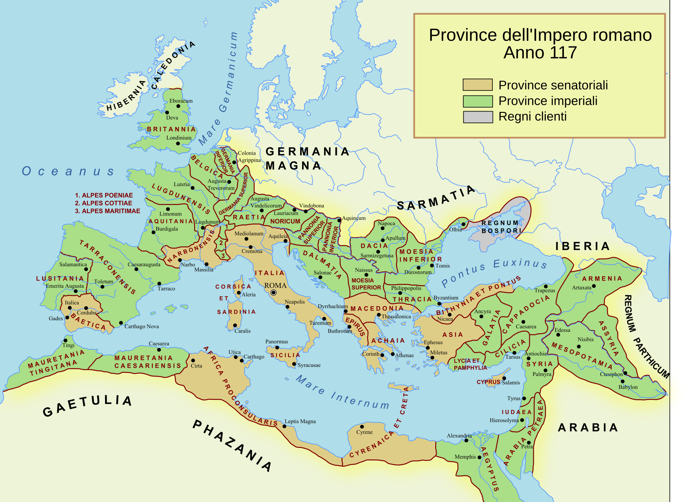

Le province
La carta distingue due colori di provincia. Le senatoriali, pacificate da tempo, erano rette da proconsoli scelti dal Senato; le imperiali, dove stavano le legioni, da legati nominati dall’imperatore.
L’Impero romano nell’anno 117, alla morte di Traiano, quando fu più grande che mai

Nell’estate del 117 muore Traiano, e l’Impero che lascia non sarà mai più così grande. Questa mostra lo guarda in quell’anno, come una carta aperta sul tavolo.
Dalla Britannia alla Mesopotamia, dal Reno e dal Danubio fino ai deserti d’Africa e d’Arabia, un solo governo circonda per intero il Mediterraneo. I Romani lo chiamavano mare nostrum, il nostro mare. Le stime sulla popolazione vanno dai cinquanta ai settanta milioni di abitanti.
Il successore, Adriano, rinuncerà presto alle conquiste più lontane, oltre l’Eufrate, e preferirà difendere i confini che allargarli. La carta della copertina è dunque un istante: le quattro schede che seguono ne spiegano i segni.
La carta distingue due colori di provincia. Le senatoriali, pacificate da tempo, erano rette da proconsoli scelti dal Senato; le imperiali, dove stavano le legioni, da legati nominati dall’imperatore.
Ai margini il terzo colore segna i regni clienti: stati con un proprio re, legati a Roma da alleanze e obblighi. Erano un cuscinetto fra l’Impero e chi stava fuori.
Più di ottantamila chilometri di strade principali univano le province. Lungo le vie, i miliari contavano le miglia: mille passi l’uno, poco meno di un chilometro e mezzo.
Sotto Traiano le legioni erano trenta, ciascuna di circa cinquemila uomini. Stavano quasi tutte lungo i confini, sul Reno, sul Danubio e a oriente.
Un solo sistema di monete correva da un capo all’altro dell’Impero. Le tre qui sotto sono disegnate in questo documento, senza volti né iscrizioni, perché si confrontino i soli metalli.
Vitruvio descrive i pavimenti a strati, e le strade maggiori seguono lo stesso principio: sotto le lastre che si calpestano stanno tre letti di materiale sempre più fine. Lo schema ne mostra la sezione.
Nei pavimenti più ricchi, al centro di un tappeto di tessere regolari, stava l’emblema: un quadro di tessere minutissime, spesso composto a parte in bottega e poi posato nel pavimento. Il disegno qui sotto ne immagina uno, con la sua cornice a meandro, e lo lascia svanire verso i bordi, come un mosaico che il tempo ha consumato.
Il percorso parte da Roma e segue le strade verso i confini: si esce dalla città per la via Appia, si attraversa il mare, si arriva al Vallo che Adriano farà costruire in Britannia pochi anni dopo. Ogni sala ha una sola vetrina e un solo oggetto, perché lo sguardo non si disperda.
Tu regere imperio populos, Romane, memento.
Ricorda, Romano, di governare i popoli con il tuo potere · Virgilio, Eneide, VI, 851
Le visite guidate partono ogni ora intera. Le scuole prenotano per telefono; per tutti gli altri l’ingresso è libero, fino a esaurimento dei posti nelle sale.
La mostra, la sala e le date sono inventate: questo pieghevole è un campione di stampa. La carta è vera. Il file RomanEmpire_117_it.svg viene da Wikimedia Commons, dove è registrato come pubblico dominio; le monete, la sezione della strada e l’emblema sono disegnati in questo documento. Caratteri: Source Serif 4 e Source Sans 3, SIL Open Font License.